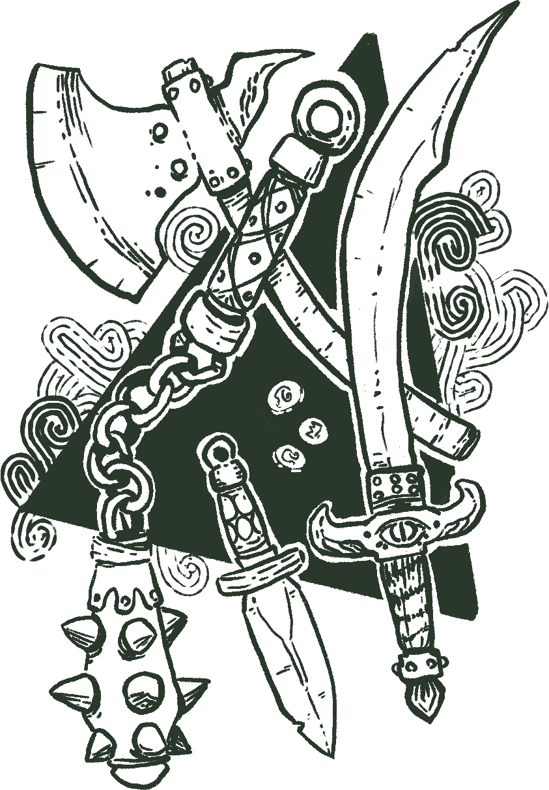
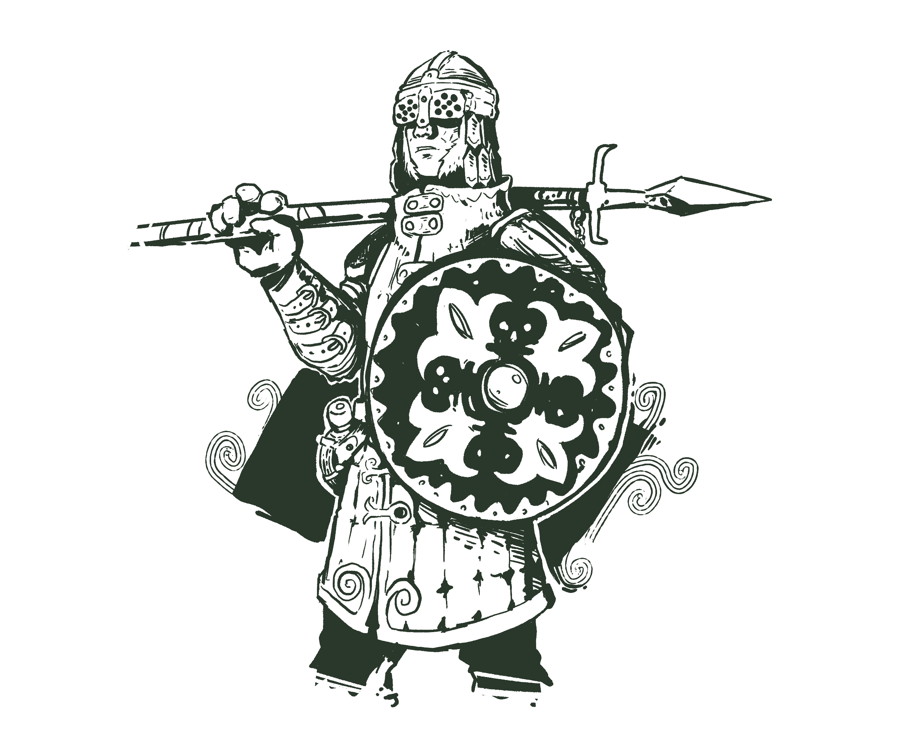
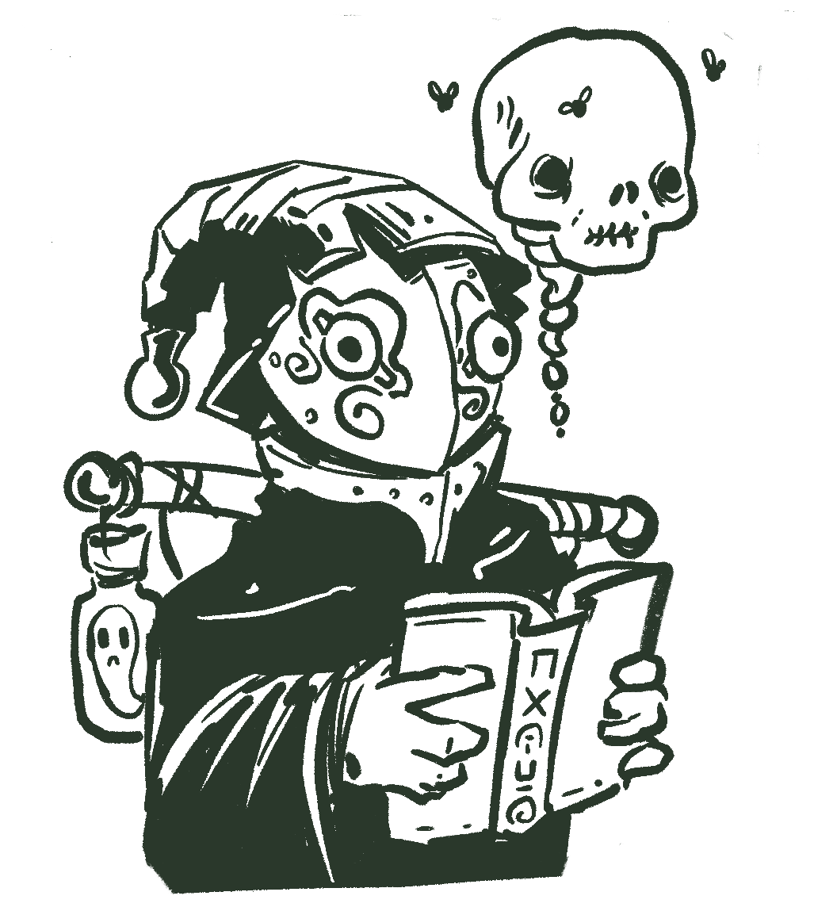
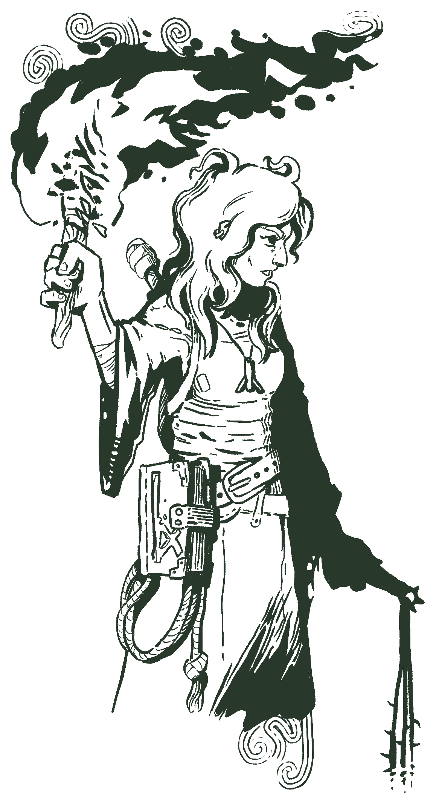

Blacksalt
This section of the book is still a very early work in progress, more content will come soon!
Equipment

There are 5 item categories common, uncommon, valuable, rare and exotic. The categories set the item price and how hard is to find it during the interlude.
Again, if you really like statistics, this is the statistics map of the possible prices.
| name | description | tags |
|---|---|---|
Water | 2 units of water can fit one slot. | Quick |
| name | description | tags |
|---|---|---|
Cloth | A piece of cloth, can be used as improvised bandages. | Slow |
Bandages | A pack of 3 bandages, used to stop bleeding. | Quick |
Drawing tools | Some papers and drawing tools, can be used to draw maps or write scrolls, Ud8. | |
Common clothes | Nothing fancy. | Equipment |
3 meter pole | Good for looking for traps. (Big) | Equipment |
Iron spikes | For fixing doors open and making sure things stay in place. Ud8. | Slow |
Canteen | For holding water and other liquids. | Quick, Equipment |
Ration | Removes the hungry affliction. If cooked during camp, can feed 2 (or 3) adventurers (if someone has the cooking skill) | Slow, Camp |
Torch | A pack of 2 torches. Lights the way for Ud6 decays. | Slow |
Oil | For refueling the lantern. | Slow |
Rope | 10 meters of rope. | Slow |
Special ration | Tea, coffee or hot chocolate. Does not remove the hungry affliction. | Camp |
Seweing tools | Repairs one armor point from any cloth armor. Ud8 uses. | Camp |
Small bag | For extra inventory space. | Equipment |
Holy water | Can be thrown at undead for DEX 2PR, Ud6 uses. | Equipment |
Shovel or pickaxe | Good for digging around. | Equipment |
| name | description | tags |
|---|---|---|
Climbing gear | 15m of rope with a hook, spikes and other safety utensils for Ud6 climbs. | Slow |
Waterskin | A large container for holding water and other liquids. | Slow, Equipment |
Camping supplies | Basic supplies for making a fire and cooking. | Camp |
Lockpicking tools | For opening simple locks. Ud20 uses. | Slow |
Trapping kit | For making and disarming simple traps. Can build Ud6 traps. | Slow, Equipment |
Lantern | Lights the way for Ud8 decays. Uses oil. Quick to light, slow to refuel. | Quick, Slow |
First aid kid | Heals one STR or DEX wound. Ud6 uses. | Camp |
Medical supply | Pack of 2. Used in camp for healing 1 wound. | Camp |
Healing tonic | Heals one INT or DEX wound. Ud4 uses. | Quick |
Wine | Heals one PRE wound and removes Parched. Ud4, causes Nauseated if you drink too much. | Slow |
Leatherworker's toolkit | Repairs one armor point from any leather or cloth armor. Ud6 uses. | Camp |
Compass | Useful for not getting lost. | Quick |
Small pouch | For extra inventory space. | Equipment |
Backpack | For extra inventory space. | Equipment |
Exorcism book | One extra dice when banishing undead. |
| name | description | tags |
|---|---|---|
Mechanics toolkit | For fixing, assembling and disassembling mechanical devices. | |
Ashes of insight | Identify a single magic item (slow) or reveals something invisible (quick) | Quick, Slow |
Armourer supplies | Repairs one armor point from any armor. Ud6 uses. | Camp |
Holy symbol | Used to perform miracles. | |
Wine of Yoros | Liquid courage. Heals one PRE and one INT wound. | |
Pack mule | Useful for carrying items on long journeys. Has 10 inventory spaces, requires 2 rations per day or grass. |
| name | description | tags |
|---|---|---|
Fine jewellery | Made of precious materials, not very useful in a dungeon. | |
Living ashes | +1 damage to a weapon during expedition, Ud4 uses. | Quick |
Alchemic kit | Can be used for modifying, identifying and making potions . | |
Spell book | Simple spell book, holds 3 spells. |
Weapons
All weapons can be used with one hand, unless stated otherwise.
| Name | Stats | Special Rules |
|---|---|---|
Battle axe | STR 4+2B | 2 hands. |
Cane | STR 1+1 | |
Driftwood Club | STR 2 | |
Dagger | STR 1 + 3P | |
Falchion | STR 3+1B | |
Flail | STR 2+2 | Ignore shield tokens. If you miss, roll a d6, on a 1 you hit yourself with 1 wound. |
Quarterstaff | STR 1+1 | On hit add one [dodge token]{.tip} to the attacker. |
Sacrificial dagger | STR 1B+1 | If all damage is reduced roll a d6, on 1 it breaks. |
Notched whip | DEX 1R + 2B | If the enemy has no armor, add a stun maker to the enemy. Can hit diagonally. |
Short Spear | STR 2+1B | 2 hands. Can be used with 1 hand, but reduces the attack roll by 1 dice. Can hit diagonally. |
Long Spear | STR 3+1B | 2 tiles. 2 hands. Can be used with 1 hand, but reduces the attack roll by 1 dice. Can hit diagonally. When hitting tiles close use (-STR 1+1). |
Short sword | STR 2+1 | If dual wielded becomes 3+1. |
War hammer | STR 2P + 3 | If you hit roll a d6, on a 6 add a stun token to the enemy. |
Throwing hatchet | DEX 2+1 | Nearby. You can use STR to hit but if you do, flip a coin, on heads it hits with the handle, causing no damage. Ignores shield tokens. You can use STR to melee with no downsides. |
Short bow | DEX 2+1R | Nearby. 2 hands Need arrows. |
Crossbow | DEX 3P+1R | Nearby. 2 hands. Requires 2 actions to reload. |
The Dead Vigil
One of the most notable things about Blacksalt is the dead vigil. Any creature that dies in Blacksalt has a chance to come back to life as an undead, humans will almost always come back, animals and other smaller creatures can come back to life but that's not common. This effect is called the dead vigil.
The cause of the dead vigil is uncertain, some blame the old king for trying to achieve eternal life, others say its because of something buried deep into the island tunnels, but no one knows for sure.
Any corpse if left undisturbed will come back to life after 1d6 weeks as a Freshly risen corpse or Reanimated husk, depending on the state of the conservation and will start looking for other people to attack. If the corpse is too damaged or somehow unsuitable it may come back as ghost, like a shadow, that's rare though, but ghosts are extremely dangerous so people avoid destroying corpses.
The most "elegant" way to dispose of a body is a proper burial ritual, and a coffin with the seal of Cador, that will stop the corpse from returning. This is a relatively new technique, during many years people didn't know how to deal with their dead. Different groups of people tried many different rituals and techniques to stop their dead from coming back, most had horrible consequences for them.
Warrior Background
Currently workin on this part, while you can use this, some changes and balancing will be made soon.
Footman
 Footmen starts with the hardened special trait, allowing them to reduce any damage they receive.
Equipment
Backpack, Spear (STR 3+1B), metal shield(2 shield tokens), padded armor (2 AP), 2d6 silver coins.
Manoeuvers
- Turtle: 2 actions. Raise your shield, get on one knee and brace for impact. Perform a defend action (adding the appropriate number of shield tokens) and for this turn you can't receive fatigue for defending.
Gladiator
 Gladiators are used to gamble their life away for money. To them, the only difference is that Blacksalt island pays better.
Gladiators are used to gamble their life away for money. To them, the only difference is that Blacksalt island pays better.
They start with the battle trance special trait, allowing them to chain attacks, as long as they do the last blow on an enemy.
Equipment
Bag, Falchion (STR 3+1B), wooden shield(1 shield token), gladiator armor (1, 1 AP), cage helmet(1 AP), 2d6 silver coins.
Manoeuvers
- Bash: (STR 1) Bash with your shield or weapon hilt, on a hit add a stun token to target.
- Disarm: (-DEX 1) On hit the target drops the wielded weapon close.
- Glorious finish: Perform a regular attack. If the gladiator kills the last enemy in the combat with this attack, the whole party recovers one presence fatigue or wound. On a failure the gladiator receives on presence fatigue. If the combat was purposely stalled, target is currently immobilized or harmless in any way, this has no effect, this only work when there's real danger involved.
Barbarian
Barbarian have the berserker special trait that allows them to keep fighting while ignoring fatigue or wounds.
Equipment
Bag, Battle Axe (STR 4+2B), loincloth, war paint.
Manoeuvers
- Roar: (PRE) All enemies nearby. The barbarian must perform a presence test for each target. receive a stun marker. Can only be performed once per battle. Only works on enemies with the living tag.
- Charge: The barbarian charges target forward moving in a straight line, dragging the target. If charge hits a wall place characters as close as possible at the wall, cause 1 wound and one stun marker to target. Uses regular move speed. Does not work on enemies with the ghost tag.
- Reckless attack: Perform an attack that will cause 1 extra wound. Your next defense will have disadvantage.
Thief Background
Still working on this
Stalker
 The stalker start with the trait dauntless.
The stalker start with the trait dauntless.
Equipment
Backpack, Ud10 throwing hatchets (DEX 1X+1), animal bones for crafting, Ud4 trapping kit, cloth tunic, 1d6 silver coins.
Lone Rogue

Too smart or too dumb to hang out with other thieves, the lone rogue is someone who made living by robbing people on the roads. The lone rogue is constantly on the move chasing opportunities and fleeing from previous mistakes.
The lone rogue start with the trait slippery, allowing the rogue to spend a dodge token during the enemy turn to move.
Equipment
Bag, 2 short swords (STR 2+1), leather armor (1 AP), climbing tools, stolen golden icon, 1d6 silver coins.
Manoeuvers
- Wing it: Throws a melee weapon using -DEX instead of STR with range of 3 tiles. Use the weapon regular damage.
- Outsmart: Once per combat you may use presence or intelligence instead of dexterity or strength.
Hoodlum
Gang-member, have a wide net of contacts and are used to violence.
The hoodlum starts with the trait cold blooded, allowing them to use dexterity instead of strength with flanking enemies.
Equipment
Backpack, dagger (STR 1+3P), reinforced hood and vest (1 AP), lock-picking tools, 2d6 coins.
Moon-curser
Specialized in getting in and out of places unnoticed. The moon-curser start with the trait night-stalker.
Equipment
Backpack, pack mule, Quarterstaff (STR 1+1), black reinforced hood and vest (1 AP), Ud6 sleeping darts, 3d6 counterfeit coins.
Schools of Magic
Time in spell descriptions
When a spell mention turns without specifying if it's an exploration turn or combat turn it means that the the context should be used. If that spell is cast during combat it will last that many combat turns if it's cast during exploration, it will last that many exploration turns.
When a spell has a duration that explicitly mentions exploration turns it can also be cast in combat, remember that the whole combat lasts only one exploration turn.
When rolling for duration, unless specified otherwise, the roll is made by the player as soon as the spell have been cast.
Necromancers of Yadar

Controlling the dead and the dark forces of the void is the Necromancers of Yadar's specialty, their techniques are strictly forbidden in most places of the world, but in Blacksalt no one cares, they will take whatever works.
Tales tell that Yadar is a small island, hidden in the black sea, populated only by the undead, and ruled by three Necromancers. No one knows exactly where is the island, but Yadar disciples are everywhere, spreading the necromancer's teachings to the rest of the world.
Spells
- Pain: (2 actions) Add 3 stun tokens to a nearby living or undead enemy. Reduce the number of tokens using the enemy resistance.
- Command undead: The wizard may issue a simple command to a undead can follow in for 2 exploration turns. Only works on undead up to level 3. The command may be "renewed" by casting the spell again.
- Explode corpse: Explode any corpse that the dead vigil haven't set on yet. Causes 2 wound to everyone close that can be reduced by armor and resistances.
- Phobia: The target nearby creature gets terrified of a chosen person or object for 1d6 turns.
- Black night: Absolute darkness covers a nearby area, anything close to that area is engulfed in it and can't see. The wizard can see normally trough the darkness.
- Nightmare: A target nearby creatures immediately falls into a restless sleep, having horribles nightmare. The creature will wake up normally if disturbed.
- Bonedance: Bends the bones of a nearby creature in an unnatural way for the duration of the combat. All tests made against that creature are made with advantage. Halves that creature move speed.
Alchemists of the Golden Ridge

The secret order of the Golden Ridge is focused in transmuting and creating magic potions and artifacts. For centuries they stayed in the Golden Ridge, extracting and transmuting the local fauna and flora, until they the news of Blacksalt reached them. The amount of supernatural elements in Blacksalt is endlessly valuable for them.
Spells
- Glue: Creates a strong adhesive that covers something nearby. In combat this locks an enemy in place, they must succeed a test and spend one action to get free.
- Machine spirit: Fixes a target machine or metal armor. Doesn't work on machines that are too big.
- Smoke form: The wizard turns into smoke, and can can move around for a few short seconds, or one combat turn (2 actions). The wizard cannot be harmed while in smoke form. If after moving the wizard has no space to turn back into human form the wizard will immediately die, while trying to occupy any available space.
- Silver cannon: The wizard can use silver coins as a ranged weapon attacking with INT 3P. The wizard must spend 1 silver for each shot.
- Transmute: 2 actions in combat, 1 exploration turn or free action during camp. The wizard may mix elemental extracts to create tonics. Requires an alchemic toolkit and a bottle.
Transmuting
Elemental extracts can be found in corpses and monster remains. To get the elemental extract from a corpse a wizard requires an alchemic toolkit and one exploration turn. For each point in intelligence proficiency the wizard can get the extract from an extra corpse nearby in that turn. Check the bestiary for what type of of extract a enemy has. If there is nothing on the enemy sheet, that enemy has no viable extract.
A single inventory slot can store two different extracts. You can stack as many extracts of the same type in the same slot as you want.
| Element | Yig | Grai |
|---|---|---|
| Flame | -1 | +1 |
| Water | +1 | -1 |
| Smoke | 0 | -1 |
| Necro | -1 | 0 |
| Rot | 0 | +1 |
| Ether | +1 | 0 |
To make a potion the wizard can mix any number of extracts available. Add all from the Yig column, then from the Grai second. The numbers must match one of the recipes.
A Healing Tonic (2,0) can be made adding water (+1, -1), ether (+1, 0) and rot (0,+1). An alternative would be adding ether (+1,0) twice instead.
- Healing tonic: (2,0) Heals one intelligence or dexterity wound. Ud4 uses.
- Potion of giants: (0,3) Heals all strength wounds and fatigue. Ud4 uses.
- Explosive potion: (-2,2) Can be thrown to a nearby tile, causing 2 wounds to anyone in that tile and 1 wound to anyone close, damage can be reduced.
- Tonic of Bravery: (1,1) Character can't get terrified during this expedition.
- Anti-poison tonic: (1,-1) Cures Nausea.
Thaumaturgists of Ravenhome
Castle Ravenhome is a prestigious institution that offers daily classes, teachers and a title to anyone who completes the program. More than half of students die horribly during the course, though.
Spells
- Magic Missile: During this combat the wizard can use magic missiles as a ranged weapon, attacking with INT 3 for.
- Arcane prison: A target person or object gets trapped in an arcane crystal, locked in time and space. They can't act or be interacted with for 1d6 turns.
- Magic Shield: During this combat, the wizard get a shield token on the start of the wizard's turn.
- Arcane Seal: Protects a nearby person or object from spells for 1d6 exploration turns.
- Pocket reality: Creates a bag that looks very small on the outside, but has 3 slots. Anything inside do not count towards encumbrance. It lasts until the end of the expedition.
- Arcane fire: Target 2 nearby tiles, anything standing in that tile takes 2 wounds per turn, those wounds can be reduced. Lasts until the end of the combat.
Wandering Mystics
Their order is not hierarchical or ordered; rather, they adhere to a strict moral code. They typically select children who are lost as their apprentices. It is common for them not to stay in a place for too long, and they usually share their observations with fellow Wanderers through writing with invisible ink.
Spells
- Magic mouth: Creates a magic mouth at a far location, that mouth will repeat a phrase for the wizard, can be loud or quiet at the wizard's discretion.
- Arcane eye: The wizard can see through a floating glowing eye that can be controlled. The eye can't move the eye more than far away from the wizard. If the eye gets damage it disappears and the wizard receives 1 intelligence wound.
- Knock/Lock: Locks or opens a door nearby. Will unlock any simple mechanical lock.
- Mind fog: A target close cannot form memories of the next 1d4 turns. The GM should roll the dice in secret.
- Weave fate: Roll up to the wizard's available intelligence dice and keep them around. You may use them to replace any dice result you roll in the next 2d6 exploration turns. For every dice you don't use after that, receive one intelligence wound. The GM should roll the timer and keep it in secret.
- Mystic ink: Creates an glowing colorful ink that only other wizards with the mystic ink spell can see. The wizard's hands can be used to paint with this ink.
The Awakened
Most Awakened believe themselves to be cursed, they never studied magic but the Void found them. Although they don't fully comprehend their powers, they've learned to use them to survive.
Spells
- Light: Illuminates the current room for 2d6 exploration turns.
- Haste: A nearby creature has their movement speed doubled until the end of the combat.
- Shackles: The wizard creates magical shackles that hold a nearby creature in place, adding 2 stun markers per turn. It lasts as long as the wizard keeps channeling the spell. The wizard can't move or act while channelling.
- Telekinesis: The wizard may pull or push a close object using intelligence as strength. Or use any weapon with intelligence as strength for one turn.
- Hover: The wizard can hover one meter above the ground, water or similar. Lasts 1d6 turns.
- Nether swap: Immediately swaps place with a target creature.
Gods
New Gods
The new gods are the gods that appeared after the origin of the new world, the world current one.
Goshkalon
 The God of Laughter, Goshkadon is a quite controversial god. His influence is mostly perceived as benign, but he's worshiped by goblins, gnolls and other evil cults. His blessings are never straightforward, usually having some ironic humor to it, never really fixing any real problems, only numbing the symptoms and effects of them.
The God of Laughter, Goshkadon is a quite controversial god. His influence is mostly perceived as benign, but he's worshiped by goblins, gnolls and other evil cults. His blessings are never straightforward, usually having some ironic humor to it, never really fixing any real problems, only numbing the symptoms and effects of them.
Often venerated at the sites of great tragedies, gathering followers among the desperate and hopeless. Worshiping Goshkalon gives its devotees so much bliss that some will pray so obsessively that often die from hunger, thirst, and exhaustion without even noticing it.
Prayers
- Bliss: (Close) Choose one affliction the target currently has, during this expedition that affliction will have no effect, but can't be removed.
- Euphoria: (Close) Target recover 2 fatigue. During this combat the target can ignore wounds and fatigue when counting available dice. They can still receive wounds and fatigue normally.
- Ignorance: (Nearby) The target can't use any INT based attacks for 2d6 rounds.
- Numbness: (Nearby ally) Heal all PRE wounds, but causes one fatigue in STR and DEX.
- Hyperfocus: (Nearby) For the next 1d6 turns of combat the target will have 3 actions, but can only perform the same action. The target can change actions between rounds.
- Apotheosis: All nearby allies recovers all fatigue, then next turn get it back. [Prayers]
Cador
God of death, Cador want order to be brought back to the word. Cador is the great enemy of the undead, his zealots hunt them down and seal their corpses so the dead vigil doesn't set in.
Sacrifice: To please Cador, the cleric must capture, then kill an undead during the sacrifice ritual.
Prayers
- Mercy: Immediately kills any creature that would die if received 4 wounds or less.
- Seal: Creates a 3m line that no undead can cross during this expedition.
- Borrowed Time: Target cannot die for the next 2d6 turns. All wounds are placed normally and after the effect is done the target can die again.
- Judgment: All undead nearby receive a stun marker and a wound.
- Memento mori: Target undead start takeing 1 wound per turn. Lasts 2d6 turns.
- Dirge: Place a marker on a nearby target that lasts 1d6 turns. If that target dies with the marker, all nearby living creatures heal 2 wounds.
Yulak

God of purity, Yulak is not only the god of purity but also the god of fire and punishment. She is merciless and so are her disciples.
Sacrifice: To please Yulak, the cleric must self-flagellate, causing 2 wounds and bleeding to self.
Prayers
- Detect Evil: Everything nearby that's evil or undead glows with a green light, lasts for 1d6 turns.
- Righteous Fury: (Close) Target gets 3 extra dice in the next row and the angry affliction. Add one wound to any damage caused by the target in the next row.
- Cleansing Flames: (Close) Holds the target while chanting, burning the target from inside, attacking with STR 1PR+6. If the target is an ally cure any affliction, except for cursed, doomed and plagued.
- Martyr: Cause one wound to the cleric, all nearby allies recover from bleeding, terrified, shaken and sleepy.
- Purge the filth: (Nearby) Target gets extremely nauseous, vomiting a black slime and can't act for 2 combat turns or 1 exploration turn. After that the target heals 3 wounds.
Akhzu

God of nature and chimeras, Akhzu embraces the chaos and the natural flow of the wild.
Sacrifice: To pacify Akhzu, the cleric must feed the earth, burring 2 rations.
Prayers
- Season of changes: (Nearby ally) You may move any number of wounds and fatigues from one attribute to another.
- Eyes of the forest: Creates a magical eye on a Distant tree that you can currently see. You can see though the magical eye during the current expedition. The eye dies if the tree is cut.
- Prayer of Summer: Repair one armor point from everyone Nearby, including enemies.
- Prayer of Spring: Cures one wound from everyone Nearby, including enemies.
- Prayer of Winter: Causes 2 wound to everyone Nearby, the cleric and allies receive 1 wound.
- Prayer of Autumn: A weakness takes over everyone Nearby, including allies and the cleric. Removes all shield and dodge tokens.
Kaal Rafir
The god plague and diseases, Kaal Rafir is the first of the new gods, originally he was the god of entropy and cold.
Sacrifice: Kaal Rafir doesn't require sacrifices, but just praying for him at the camp will restore the cleric's powers. But when angered the whole party takes 2 non-lethal presence fatigue.
Prayers
- Hold: (Nearby) Paralyzes target for 1d6 turns, reducing the target's actions to zero.
- Silence: Absolute silence covers a Nearby area, no spells may be cast.
- Swarm: Summons a swarm of insects that can be commanded by the cleric.
Old Gods
Old gods are the ones that lived before the creation of the current world. Before this world there was another one, and some event caused it to be destroyed and the creation of the current one. These beings are so powerful that they didn't fade when their world god destroyed.
Not much is known of them and their worship is strictly forbidden in most cultures, but secret cults can be found all over Blacksalt island nonetheless.
Ulass
The Never-ending.
Achernar
The silver star.
Gyrrath
The hungry one.
Ngaazh'theg
The eye of the sea.
History
Geography
Blacksalt
Yoros
A major city in Blacksalt. Famous for it's high quality wine.